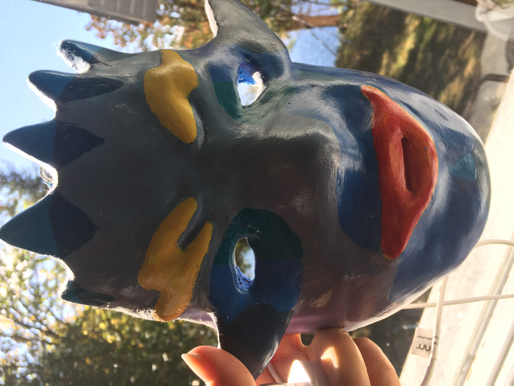
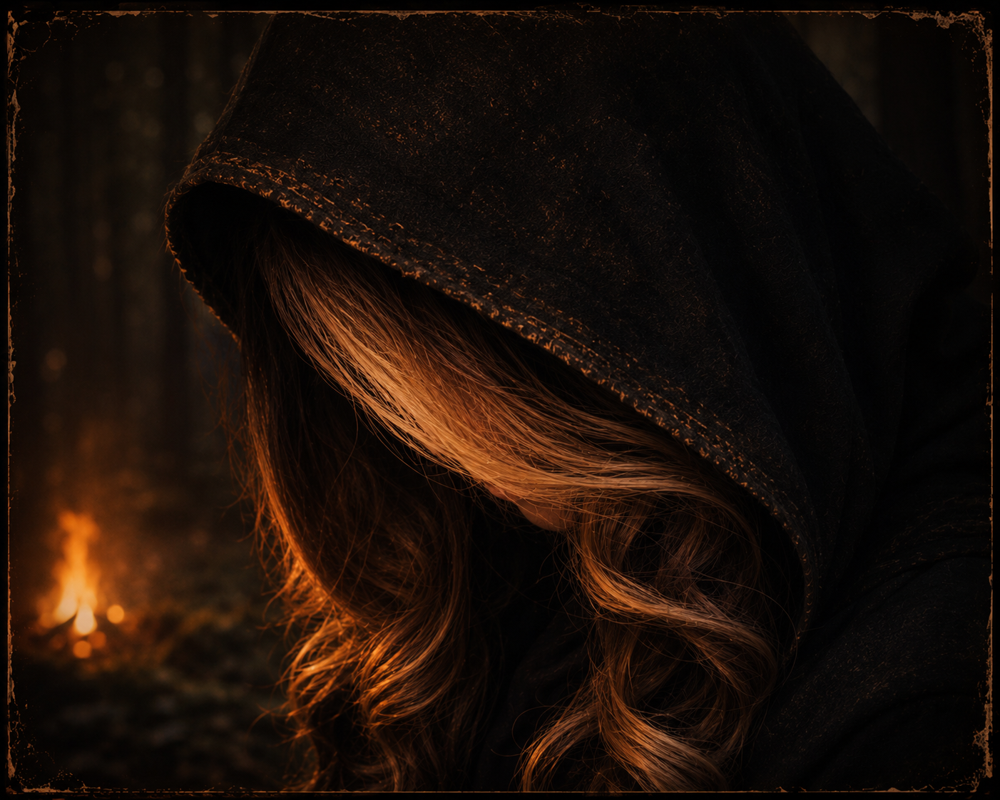

Fleshy Findlay
When a road crew uncovers a buried object in the forest, the smell draws them deeper into a secret older than the land itself. The closer they come, the harder it is to tell whether the find is a danger—or a dark gift.
ORIGINAL STORIES • DARK FOLKLORE • BEYOND THE FIRELIGHT
In old forests, forgotten roads, family memories, childhood fears, and the spaces just beyond the firelight. Dawn Hill finds them beneath the hush of the trees and in the corners others turn away from. These are stories of beauty, grief, and the things that linger after the light has gone.
COME CLOSER TO THE FIRESTORIES FROM BEYOND THE FIRELIGHT
Original tales of childhood fears, strange places, old memories, folklore, and the things that wait just beyond what we understand.

When a road crew uncovers a buried object in the forest, the smell draws them deeper into a secret older than the land itself. The closer they come, the harder it is to tell whether the find is a danger—or a dark gift.
THE FIRST FIRE WILL BE LIT SOON
MEET DAWN HILL

Dawn Hill is the kind of storyteller who listens for the hush between the trees, the soft crackle of a campfire, the stillness of a lake at dusk, and the old folklore that seems to linger in the dark. These stories are shaped by family memories, lonely forests, and the beautiful, haunting feeling that something ancient is waiting just beyond the light.
MEET THE STORYTELLERFOLLOW BEYOND THE FIRELIGHT
New stories, strange discoveries, old folklore, darkly beautiful places, and glimpses behind the stories are still to come.
STAY NEAR THE FIRE